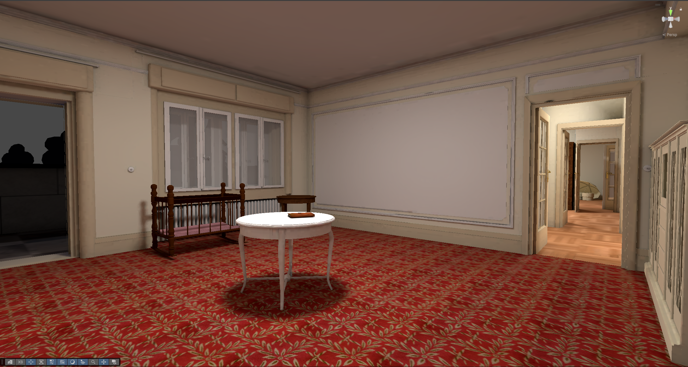
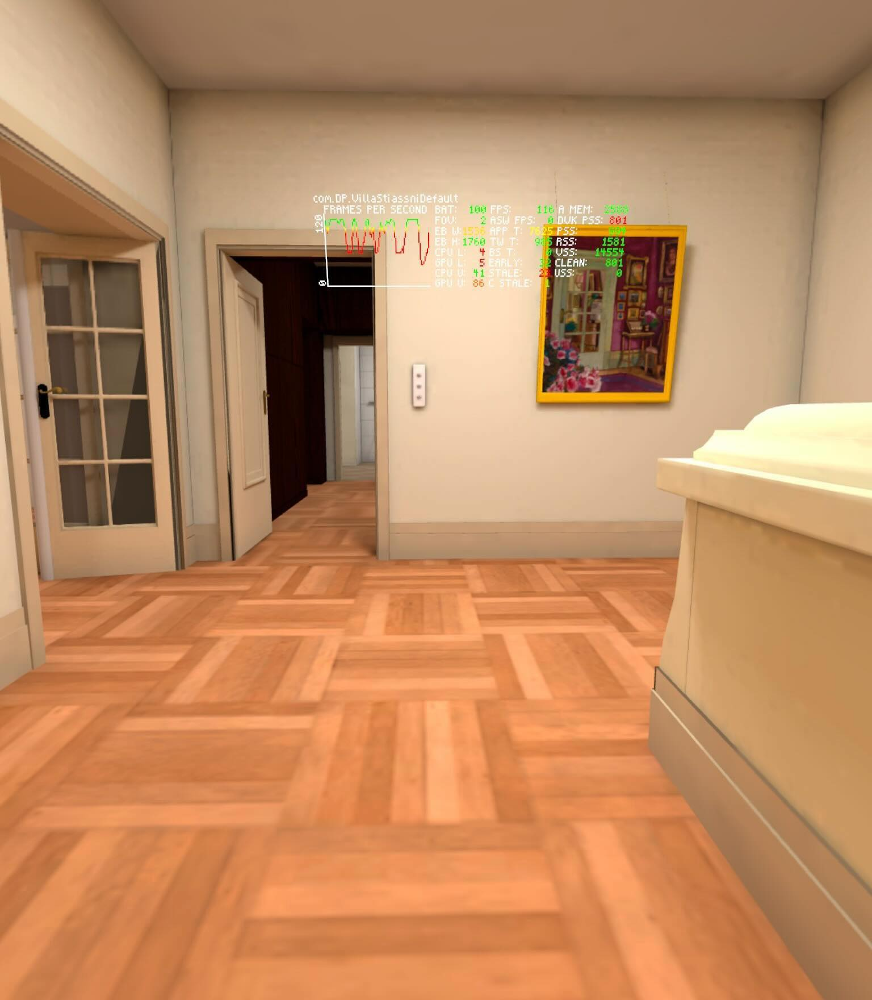
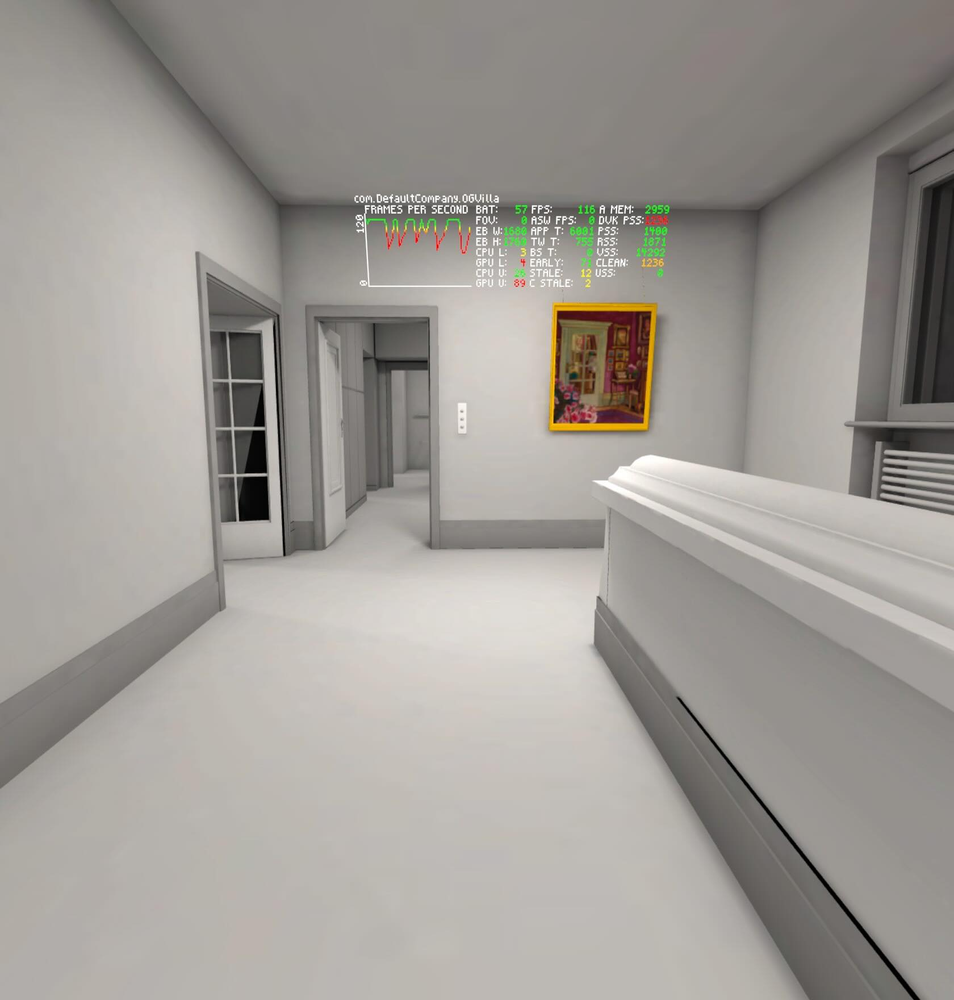
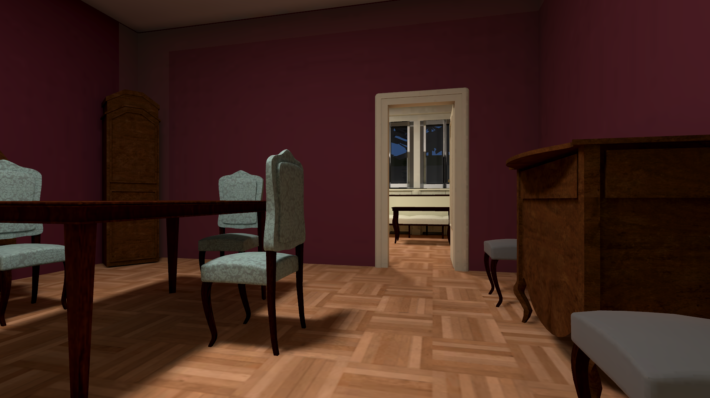
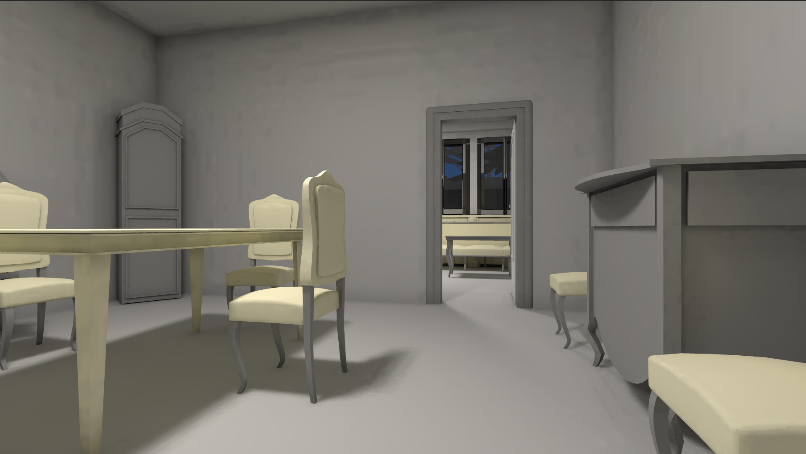
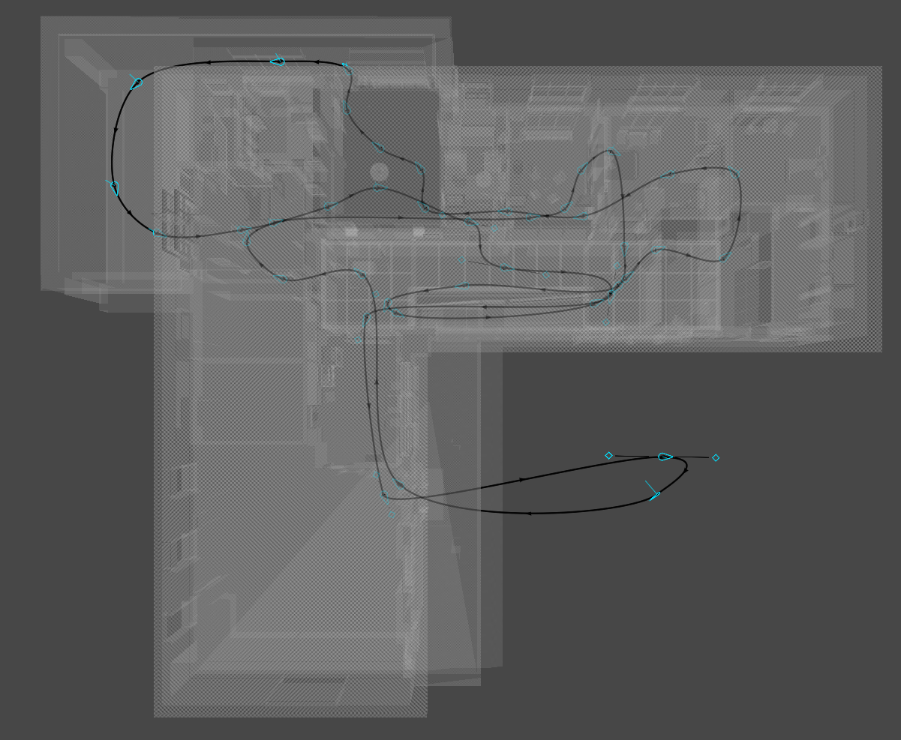

Diploma thesis
Villa Stiassni VR Optimisation
A thesis project focused on improving performance stability in standalone virtual reality applications on Meta Quest hardware.
The work uses the Villa Stiassni VR project as a case study and studies the constraints of mobile VR: frame-time stability, limited memory, predictable rendering cost, and user comfort.
Full text available here.
Optimisation areas
- Occlusion culling and visibility management.
- Level-of-detail systems for scalable scene complexity.
- Baked lightmaps, Adaptive Probe Volumes, and reflection probes.
- Texture, material, and platform-specific Unity settings.
Outcome
Occlusion culling produced the clearest improvement by reducing unnecessary rendering work and improving frame-time stability in the indoor scene. The project showed that VR optimisation is a continuous balance between visibility, geometry, lighting, materials, memory usage, and visual quality.
Screenshots
VR scene gallery





